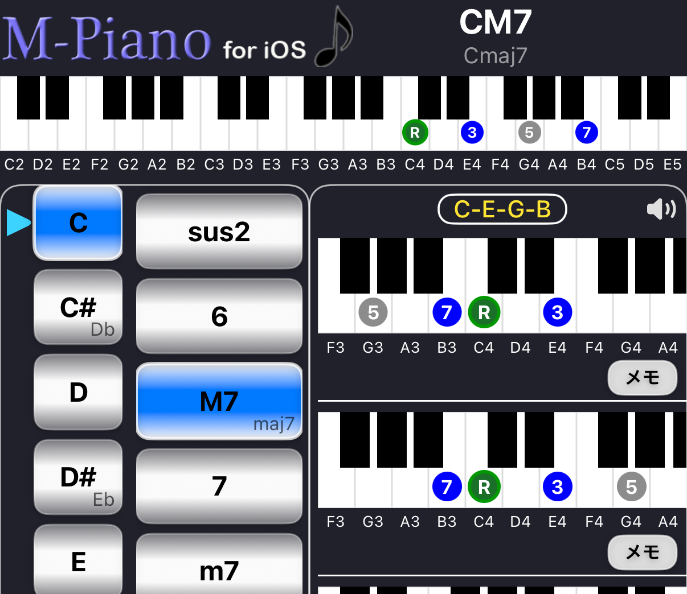
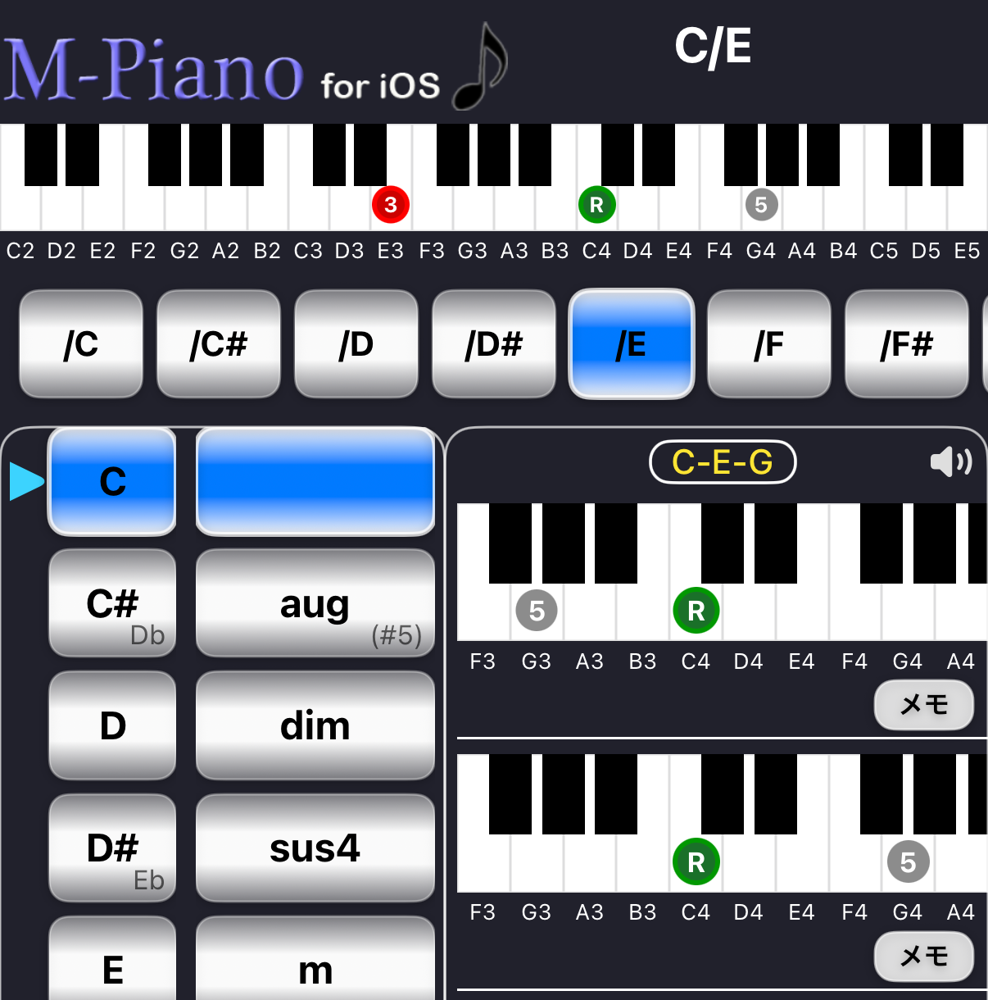

Forward
Forward
コード名からピアノコードを検索
コード名からピアノコードを検索
Forwardは コード名からピアノコードを検索する機能です。
ルートとコードタイプを選択することで コードの構成音と鍵盤ポジションを確認できます。

コードを検索するには 次の2つを選択します。
例
Root : C Type : m → Cm
コードを選択すると ピアノ鍵盤に構成音が表示されます。
表示される内容
Forwardでは 複数のコードポジションが表示されます。
それぞれのポジションは 異なる鍵盤配置になっています。
鍵盤をタップするとコードが再生されます。
実際の音を確認しながら コードポジションを確認できます。
画面右上の スピーカーアイコンは 音のオン / オフを切り替えます。
コードの横にある メモボタンをタップすると Memoに追加できます。
これにより コード進行を作ることができます。
表示されるコードタイプの範囲は Settingで変更できます。
初心者向けに 表示数を減らすことも可能です。
Pro版では次の機能が利用できます。
Pro版では オンベースコードを表示できます。

例
C / E C / G C / B♭
オンベースコードを選択すると 上部の大鍵盤に ポジションマークが表示されます。
鍵盤をタップすると
を含んだコードの響きを再生できます。